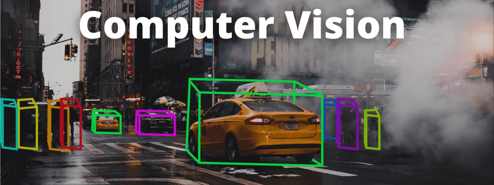
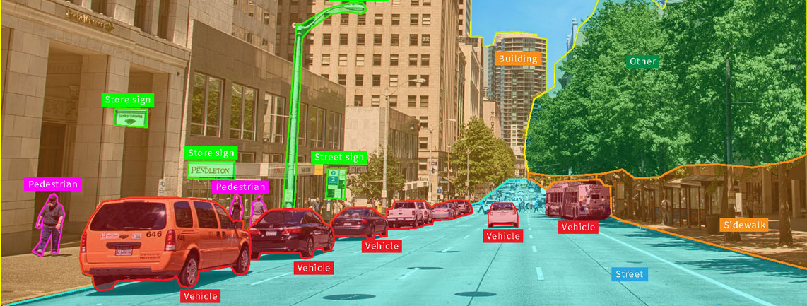

ในโลกที่มีการพัฒนาเทคโนโลยีแบบก้าวกระโดด ได้มีการนำเอาเทคโนโลยีปัญญาประดิษฐ์ หรือ Artificial Intelligence (AI) มาใช้ในทุกภาคธุรกิจและอุตสาหกรรม รวมทั้งมีบทบาทอย่างมากในชีวิตประจำวันของเราด้วย Computer Vision คือ แขนงหนึ่งของ AI ที่ทำให้คอมพิวเตอร์หรือระบบ สามารถมองเห็นและจดจำภาพนิ่งหรือภาพเคลื่อนไหวเพื่อนำไปวิเคราะห์ แยกแยะวัตถุต่างๆ ได้อย่างแม่นยำและรวดเร็ว คล้ายกับการมองเห็นของมนุษย์ หรือดีกว่า